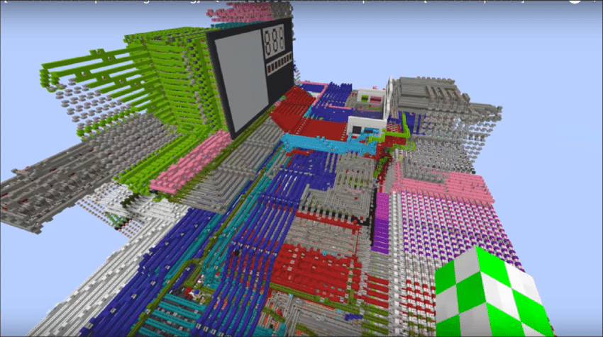
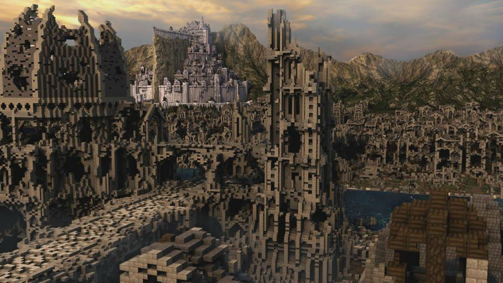
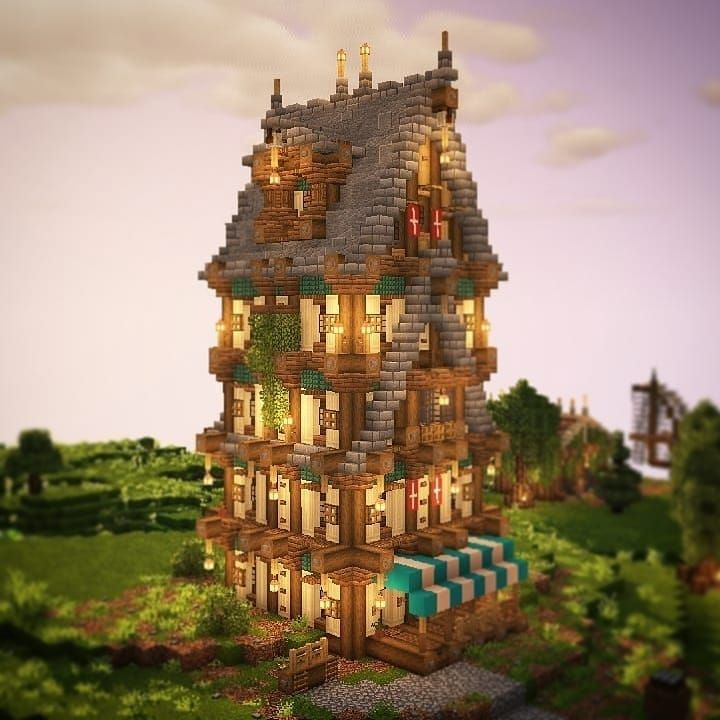

Добавлены недавно, но уже смогли полюбиться майнкрафтерам. Аксолотли могут помогать игрокам исследовать подводные данжи, так как нападают на враждебных мобов и снимают с игроков усталость. Получив урон, прикидываются мёртвыми и восстанавливают свои жизни.
Пчела
Вторые насекомые были добавлены в обновлении 1.15. Моджанг выбрали их, чтобы обратить внимание на экологические проблемы. Благодаря пчёлам появился новый блок, который может использоваться в механимах, а также свечи. А ещё они милашки. Пчела упала
Светящийся спрут
Этого моба выбрали сами игроки. Светящиеся спруты дропают светящиеся чернила, с помощью которых можно красить таблички и рамка, текст или предметы на которых становятся более контрастными и выделяющимися, что полезно для разработчиков карт.
Поддержка и обновления.
Майнкрафту 17 мая 2021 года исполнилось 12 лет, но даже спустя столько времени игра продолжает развиваться и улучшаться. За это время выпущено более семнадцати глобальных обновлений.
Игра портирована на Linux, macOS, на Android, IOS, Windows Phone, PlayStation 4, Vita, VR, Xbox One, Nintendo 3DS, Switch и Wii U и продолжает разрабатываться для других платформ.
Также существует специальное издание для образовательных учреждений, с помощью которого ученики могут изучать модели клеток, воссоздавать древнюю архитектуру, программировать и другое. Игра помогает усваивать материал, а также заинтересовывать детей.
Создатели очень кропотливо подходят к работе с майнкрафтом. Они множество раз изменяют текстуры блоков и сущностей, чтоб найти самые подходящие по стилю и понравившиеся игрокам варианты. Саунд-дизайнеры изучают звуки животных самолично, чтобы подобрать что-то максимально приближённое.
Разработчики следят за тенденциями и просьбами игроков и изменяют или добавляют нужные для них вещи. Так в последнем обновлении был добавлен блок света, который очень полезен для людей, создающих карты. А также новое игровое правило, дающее возможность пропускать ночь, когда спят не 100% игроков, что полезно на серверах.
Безграничные возможности.
Майнкрафт даёт возможность создавать огромные и сложные постройки, модификации и аддоны, карты на прохождения, текстурпаки и другие дополнения, изменяющие майнкрафт до неузнаваемости.
Моды и аддоны - это дополнение к компьютерной игре, которые чаще всего созданы фанатами.
Текстурпаки - это набор файлов, используемых для изменение игровых текстур блоков, предметов, мобов или интерфейса. А также для изменения или добавления анимаций.



Сплочённость сообщества.
Комьюнити майнкрафта очень разношёрстно, но при этом дружное. Я даже смогли собрать всего за пару дней людей, которые нарисовали криперов ниже! Сами игроки с помощью модификаций создают новые режимы игры, сервера, мини-игры, проводят фестивали и конкурсы.
Майншилд
Самый популярный русский сервер майнкрафтеров, которые снимают видео это Майншилд. 9 июня серверу исполнилось два года, за это время игроки успели выложить 495 видео; построили как минимум пять небоскрёбов, огромную работающую газету, суд, железные дороги, особняки, магазины, кремль, японскую деревушку, огромные поля разных культур, другие фермы; провели множество ивентов и игр; объявили войну, а в самом конце сожгли главный предмет сервера: яйцо дракона.
Недавно первый сезон закончился, но даже во время перезагрузки команда майншилда продолжает радовать активностями. Также они запустили дочерний сервер для подписчиков - Сабшилд и сервер для создателей видео поменьше - Майншилд Академия, на которых тоже происходят разные ивенты и активности.
2B2T
ТуБиТуТи это старейший анархо-сервер майнкрафта, которому в декабре исполнится 11 лет. За это время на нём произошли множество стычек и войн, кланы пытались захватить сервер, строили и разрушали величайшие постройки, проводили битвы и многое другое.
Так как карта ТуБиТуТи не сбрасывалась ни разу со своего создания, сейчас она весит свыше 7500Гб памяти.